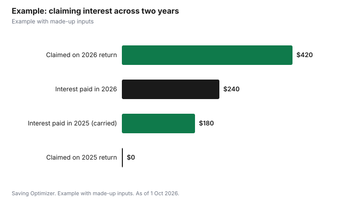

Education · Canada
Student Loan Interest Tax Credit (Line 31900): Who Still Has Interest to Claim
You can claim the interest you paid on a government student loan on line 31900 of your return, and on line 58520 of your provincial form outside Quebec. Since 1 April 2023, Canada Student Loans charge no interest, so in 2026 most of the interest left to claim comes from the provincial portion of Ontario and Saskatchewan integrated loans, from separate provincial loans, or from interest that built up before April 2023. Only the borrower can claim it, there is no fixed federal maximum, and if you owe no tax this year you can carry the interest forward for up to five years. Interest on a bank loan or line of credit, including a student loan you consolidated with a bank, does not count.
Key takeaways
- Canada Student Loans have been interest-free since 1 April 2023.
- Interest still accrues on the Ontario portion (prime plus 1.0%) and Saskatchewan portion (prime) of integrated loans.
- BC, Newfoundland and Labrador, Manitoba and New Brunswick portions charge no interest.
- Only the borrower claims; a parent paying the interest does not change that.
- Carry unused interest forward up to five years, oldest first.
- Example with made-up inputs: $420 of Ontario-portion interest saved for a taxable year.
Who still pays student loan interest
The National Student Loans Service Centre (NSLSC) says the Government of Canada permanently eliminated the accumulation of interest on all Canada Student Loans effective 1 April 2023. Interest now accrues only on the provincial portions of Canada-Ontario and Canada-Saskatchewan integrated student loans. The NSLSC lists the Ontario portion at a floating rate of prime plus 1.0% and the Saskatchewan portion at a floating prime rate, and notes that a fixed-rate option is not available on the Ontario portion.
| Loan | Interest |
|---|---|
| Canada Student Loan (all provinces) | None since 1 April 2023 |
| Ontario portion of Canada-Ontario loan | Floating prime plus 1.0% |
| Saskatchewan portion of Canada-Saskatchewan loan | Floating prime |
| British Columbia portion | None |
| Newfoundland and Labrador portion | None |
| Manitoba portion | None |
| New Brunswick portion | None (provincial interest eliminated 1 November 2022) |
The NSLSC also says borrowers with Alberta, Nova Scotia or PEI student loans have two separate payments: the federal loan with the NSLSC and the provincial loan with its own servicer. Check that servicer for whether interest applies and for your yearly interest statement. For older debt, the NSLSC notes that some provincial loans issued before August 2001, and Canada Student Loans issued before August 2000, are held by financial institutions rather than the NSLSC.
For Ontario and Saskatchewan borrowers, the provincial portion can accrue interest during the six-month non-repayment period after you leave school. The NSLSC says you can pay that interest on or before your first payment date; otherwise it is added to your balance. Either way, it issues an income tax receipt for the interest you actually paid in each calendar year.
The CRA's rules for line 31900
The CRA says you may claim interest paid in the year, or in the previous five years, on a loan for post-secondary education received under the Canada Student Loans Act, the Canada Student Financial Assistance Act, the Apprentice Loans Act, or similar provincial or territorial laws. Only the student who is legally responsible for the loan can claim it. If a parent paid the interest for you, you can still claim it, as long as the loan is in your name.
| You can claim | You cannot claim |
|---|---|
| Interest on Canada, provincial or territorial government student loans | Interest on bank loans, lines of credit or other non-government loans |
| Interest on Canada Apprentice Loans | Interest on a student loan combined, renegotiated or consolidated with another loan |
| Interest a relative paid on your loan | Interest paid because of a court judgment for not repaying |
| Unused interest from the past five years | Transferring the amount to a parent or spouse |
The consolidation rule matters most. If you moved a government student loan into a bank loan or line of credit, even at a lower rate, the interest on the new loan no longer qualifies. With federal loans now interest-free, consolidating a federal balance into a bank product would replace a zero-rate loan with an interest-bearing one that earns no credit.
Claim now or carry forward
The credit is non-refundable: it can only reduce tax you owe. The CRA's guide for students gives a tax tip: if you do not have to pay tax in the year you paid the interest, it is better not to claim it that year. Instead, carry it forward and use it on any of your next five returns, as long as you do not claim the same amount twice. You must use the oldest amounts first, and the CRA says you are responsible for tracking your carry-forward amounts, because it does not track them for you.
There is no fixed federal maximum on the amount you can claim. Outside Quebec, you claim the provincial or territorial amount on line 58520 of your Form 428 for the province where you lived at the end of the year; Quebec residents follow Revenu Québec's rules.
Example with made-up inputs
These numbers are an example with made-up inputs. Jordan graduated in Ontario in spring 2025 with a Canada-Ontario integrated loan. The Canada portion charges no interest. In 2025 Jordan paid $180 of interest on the Ontario portion and earned little, owing no tax, so Jordan does not claim it. In 2026 Jordan pays $240 more and starts a full-time job. On the 2026 return, Jordan claims the oldest amount first ($180 from 2025) and then the $240 from 2026, for $420 on line 31900, using the NSLSC tax receipts for both years.
| Year | Interest paid | Claimed that year | Carried forward |
|---|---|---|---|
| 2025 (no tax owing) | $180 | $0 | $180 |
| 2026 (taxable job) | $240 | $420 ($180 + $240) | $0 |

Steps
- Sign in to your NSLSC account and download the tax receipt for interest paid in the year.
- If you have a separate provincial loan, get the provincial servicer's interest statement too.
- List any unused interest from the last five years, oldest first.
- If you owe no tax this year, consider carrying the interest forward instead of claiming it.
- Enter the federal amount on line 31900 and the provincial amount on line 58520 of your Form 428.
- Keep the receipts; do not send them with an electronic return.
For repayment options, see student loan repayment and the grace period and how much you pay under the Repayment Assistance Plan.
Sources
- Canada Revenue Agency, Line 31900 Interest paid on your student loans, canada.ca (Wayback copy of the page modified 20 Jan 2026), as of 1 Oct 2026.
- Canada Revenue Agency, Guide P105 Students and Income Tax 2025, canada.ca (Wayback copy), as of 1 Oct 2026.
- National Student Loans Service Centre, Things You Need to Know and Glossary, csnpe-nslsc.canada.ca, as of 1 Oct 2026.
- The borrower's details and interest amounts in the example are an example with made-up inputs.
Frequently asked questions
Do Canada Student Loans still charge interest?
No. The NSLSC says interest on all Canada Student Loans was permanently eliminated effective 1 April 2023.
Which student loans still charge interest?
The provincial portions of Canada-Ontario loans (floating prime plus 1.0%) and Canada-Saskatchewan loans (floating prime), according to the NSLSC. Separate provincial loans may also charge interest.
Can my parents claim the interest they paid on my student loan?
No. Only the borrower can claim it, but you can claim interest a parent paid as long as the loan is in your name.
Can I claim interest on a student line of credit?
No. Only government student loans qualify, and interest on a student loan consolidated with a bank does not count.
How long can I carry forward student loan interest?
Up to five years. Use the oldest amounts first and track them yourself.
Where do I claim student loan interest?
On line 31900 of your federal return and line 58520 of your provincial Form 428 outside Quebec.
Researched and drafted with AI assistance and fact-checked against official Canadian sources. How we create content.
Disclosure: Saving Optimizer may earn a commission if a partner link is added later, such as a tax software offer type. No partnership is claimed on this page. Education only, not tax advice.